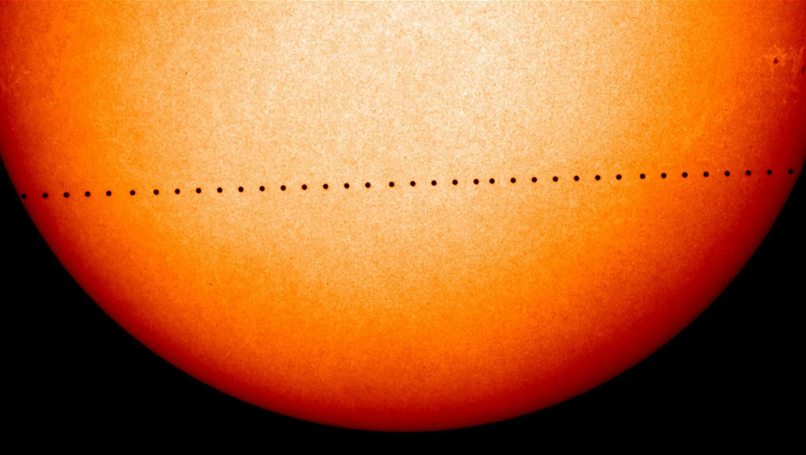

Прохождение Меркурия по диску Солнца
1. Как выглядит
На яркой солнечной поверхности видна маленькая чёрная круглая точка. Она медленно ползёт от одного края Солнца к другому. Точка полностью круглая, без хвостов и свечения, похожа на кляксу или родинку на светиле. Размер Меркурия настолько мал, что он кажется крошечным — в 160 раз меньше солнечного диска. Движение длится несколько часов. В начале и в конце прохождения чёрный кружок касается края Солнца, и этот момент называют «касанием».
2. История обнаружения и наблюдений
Первым, кто предсказал прохождение Меркурия, был Иоганн Кеплер в 1629 году. Но он ошибся в расчётах на несколько дней. Первое реальное наблюдение сделал французский астроном Пьер Гассенди 7 ноября 1631 года. Он смотрел на Солнце через камеру-обскуру (тёмную комнату с маленьким отверстием). Гассенди был потрясён — он ожидал увидеть пятно размером с Солнце, но увидел крошечную точку. В XIX веке с помощью прохождений Меркурия и Венеры астрономы уточнили расстояние от Земли до Солнца. А в XXI веке транзиты Меркурия помогают калибровать космические телескопы.
3. Природа явления
Меркурий, Венера и Земля выстраиваются почти в одну линию. Меркурий проходит точно между Землёй и Солнцем. Способность Меркурия закрывать собой крошечную часть солнечного света не имеет значения для Земли — это чисто геометрическое событие. Явление происходит только в мае (когда Меркурий в дальней точке своей вытянутой орбиты) или в ноябре (когда он в ближней точке). В мае планета кажется чуть меньше, в ноябре — чуть больше.
4. Связь с культурой и мифами
Древние цивилизации не могли наблюдать прохождение Меркурия — у них не было защиты для глаз. Когда в XVII веке европейцы впервые увидели чёрную точку на Солнце, некоторые решили, что это неизвестная планета или небесное знамение. Астрологи связывали транзиты Меркурия с нарушениями связи, транспорта и торговли — ведь Меркурий в мифологии был богом-вестником, покровителем путешественников и торговцев. Серьёзная наука эти связи отрицает.
5. Условия для наблюдения
Требуется ясное небо и обязательная защита для глаз. На солнечное затмение надевают светофильтры, а здесь аналогично — нужны специальные солнечные очки или стекло с алюминиевым напылением. Смотреть сквозь дым, копчёное стекло или фотоплёнку опасно для зрения. Без защиты видеть чёрную точку Меркурия невозможно — Солнце слишком яркое. Лучше всего использовать небольшой телескоп с солнечным фильтром: в бинокль точка будет слишком маленькой и плохо заметной. Чем больше увеличение, тем лучше виден ровный чёрный кружок на фоне солнечной поверхности. Можно наблюдать проекционным методом — направить телескоп на лист белой бумаги и смотреть тень.
6. Редкость и периодичность
Прохождение Меркурия случается 13–14 раз в столетие. Это намного чаще, чем прохождение Венеры (которое бывает парами с разницей в 8 лет, а потом промежутком в 105–121 год). Все транзиты Меркурия приходятся на май или ноябрь. Майские повторяются каждые 13 лет, ноябрьские — каждые 7 или 13 лет. Ближайшие прохождения: ноябрь 2032 года, а затем ноябрь 2039 и май 2049. В отличие от солнечного затмения, транзит виден сразу с половины Земли — там, где в этот момент день. На ночной стороне планеты его не увидишь. Следующее прохождение случится в 2032 году (ноябрь); до этого было в 2019 году (ноябрь) и в 2016 году (май). Чтобы увидеть его, нужно оказаться в нужном месте Земли в дневное время.
